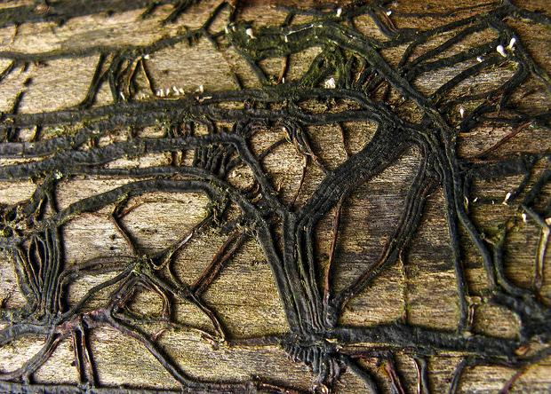
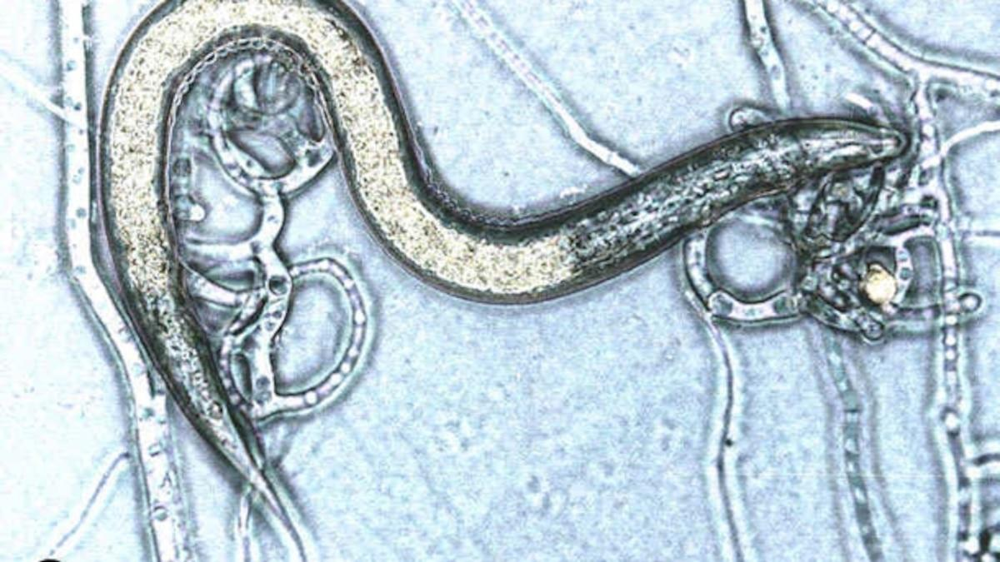
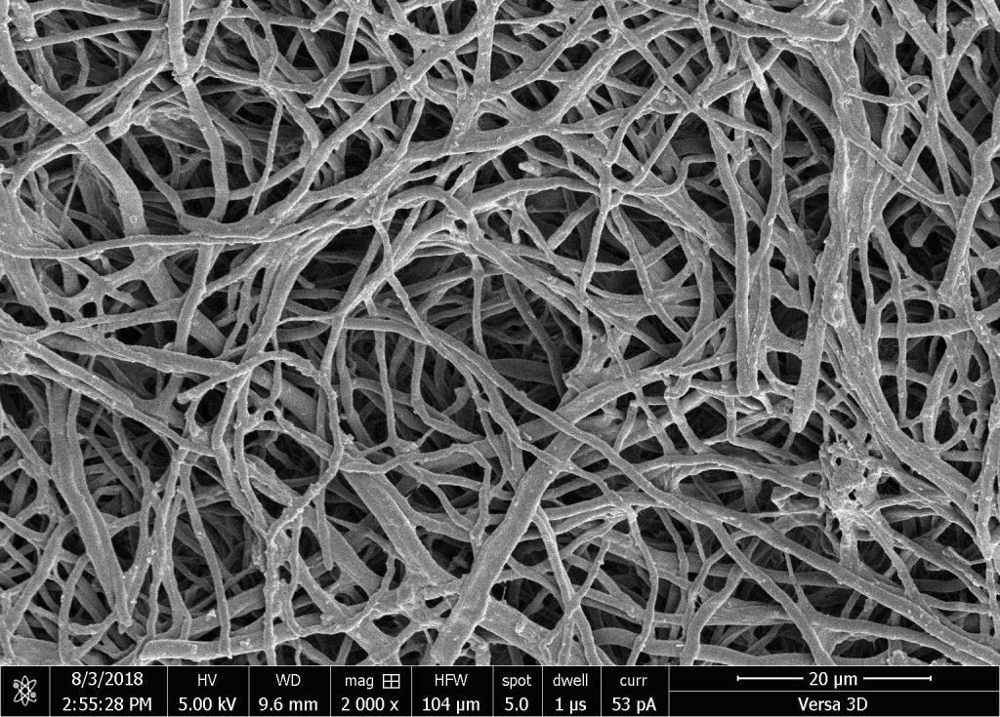
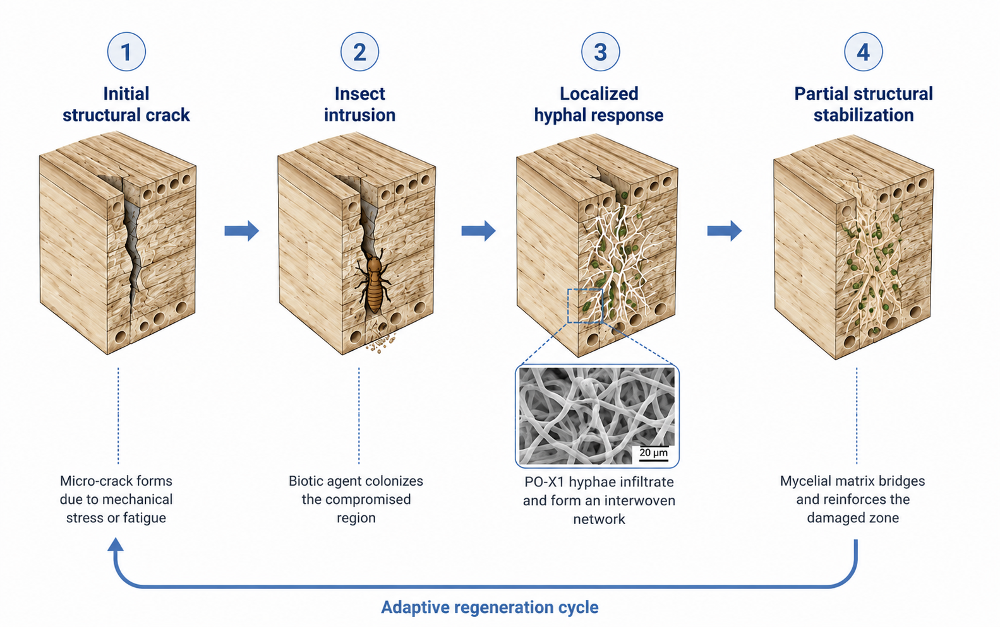

This page presents a hypothetical synthetic biology design for portfolio and educational purposes. PO-X1 has not been physically engineered, tested, or validated by me. Images 1–3 are reference visuals used to support the concept, while Image 4 is an AI-generated conceptual illustration. Figure captions and body text include numbered citations showing which sources support the mechanisms being discussed. None of the images should be interpreted as experimental results from PO-X1.
Timber and other bio-based construction materials are vulnerable to cracking, moisture damage, fungal decay, and wood-boring insects. Current repair methods usually require damage to be detected after it has already spread, creating long-term maintenance costs and material waste. This proposal explores a speculative living-material system in which filamentous fungal networks are designed to sense localized structural damage, reinforce weakened regions, and reduce insect activity through controlled enzyme release. Because mycelium-based composites depend heavily on fungal species, substrate, moisture, density, and processing conditions, PO-X1 is not framed as a universal structural replacement or concrete-strength material [1,2,3]. Instead, the concept uses existing work on hybrid living myco-composites, fungal cell-wall biology, chitin-degrading enzymes, and developmental control pathways to define a constrained research direction for future self-healing biomaterials [4,5,6,7]. The repaired structure is not proposed to serve as the primary nutrient source; a real version would require a separate sacrificial nutrient phase so the repair organism does not become a new form of biological decay.

The first design goal is localized growth toward damaged zones. Fungal mycelium naturally forms branching networks, and myco-composite research shows that final material behavior depends on controlled growth conditions rather than uncontrolled fungal spread [1,2,3]. PO-X1 imagines redirecting cord-like vegetative growth toward mechanical stress, moisture gradients, and chemical signals associated with small cracks. To avoid turning the fungus into a decay agent, the system would rely on an embedded sacrificial nutrient layer, hydrogel reservoir, or biodegradable microcapsules instead of allowing the repaired timber to become the main substrate. Growth would therefore be biased toward temporary crack filling and local bonding, not long-term digestion of the host structure.

Wood-boring insects contain chitin in their exoskeletons, and chitinases are enzymes capable of breaking down chitin-containing structures [6]. The design has to account for the fact that fungal cell walls also contain chitin, meaning unrestricted chitinase secretion could damage PO-X1 itself [5]. For that reason, chitin-targeting activity is framed as spatially restricted, inducible, and externally directed: enzyme release would be triggered only near confirmed macro-boring insect contact zones, while the fungal matrix would use secretion gating, local inhibitors, and protective wall remodeling to reduce self-digestion. Microscopic organisms that do not chew wood, such as nematodes, would not be treated as the same damage mechanism as termites; they would require separate sensing criteria rather than jaw-based structural intrusion logic.

Mycelium-based composites are already being studied as lightweight, sustainable materials, but their mechanical performance depends strongly on fungal species, substrate, growth conditions, density, moisture behavior, and processing method [1,2,3]. PO-X1 therefore does not claim concrete-level strength. Instead, it proposes that controlled hyphal bonding and matrix densification could improve local stiffness enough to support minor crack filling, insulation repair, or non-load-bearing reinforcement. Any structural role would have to be tested against conventional repair materials, because the organism’s useful behavior depends on maintaining a designed nutrient source and stopping expansion once the defect is locally stabilized.

The regeneration phase is modeled as a localized repair response rather than a complete structural rebuild. Nutrients would come from a controlled sacrificial phase, such as embedded biodegradable capsules or a replaceable hydrogel reservoir, rather than from digestion of the structural material itself. This keeps fungal growth tied to the repair zone and prevents the host timber from becoming the organism’s food source. The expected outcome is partial restoration of continuity within small defects, not guaranteed recovery of full original strength. Long-term testing would also need to check whether repeated growth cycles select for faster spread, weaker repair behavior, or reduced production of costly defense enzymes.
Mitigation of uncontrolled sporulation and fruiting morphogenesis: